|
|
|
|
|
|
|
|
|
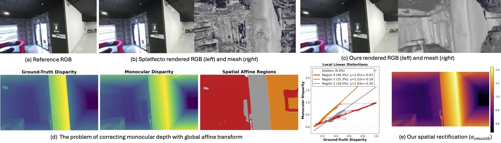 |
| (a-c) Standard 3DGS overfits appearance, producing noisy underlying geometry. In contrast, our method extracts clean, highly accurate meshes while maintaining photorealism. (d) Monocular disparity exhibits piecewise-linear distortions, proving that a single global scale-and-shift alignment is fundamentally insufficient (scatter plot). (e) We overcome this by estimating an edge-aware spatial scale field to rectify the monocular depth prior, yielding geometrically consistent 3D representations. |
| 3D Gaussian Splatting (3DGS) has become the leading approach for photorealistic novel view synthesis, yet its underlying geometric accuracy lags behind its visual quality. Existing depth-guided methods attempt to resolve this by regularizing the optimization with monocular depth priors, typically relying on a global linear alignment. Crucially, we reveal a fundamental flaw in this assumption: modern monocular depth networks systematically exhibit region-dependent, piecewise-linear distortions. This phenomenon invalidates standard global alignment strategies, which inevitably warp scene geometry by enforcing a single scale-and-shift transform. To address this, we introduce a spatially varying affine rectification model that dynamically corrects monocular disparity into consistent metric depth using regionally smooth, edge-aware fields. We further derive a normal-aware regularizer that uses spatial gradients to couple the rectified disparity with 3DGS depth and normals. Extensive evaluations demonstrate that our sensor-free approach prevents structural collapse under extreme view sparsity and extracts highly accurate 3D meshes, effectively bridging the gap toward sensor-supervised geometric fidelity while preserving state-of-the-art photorealism. |
| Depth-guided 3DGS methods usually assume that monocular disparity can be aligned to metric depth with a single global scale-and-shift. We find that this assumption breaks down: modern monocular depth models (Depth-Anything-V2, MoGe, Metric3D-V2) show region-dependent, piecewise-linear distortions. The predicted disparity splits into distinct regions, with breaks along object boundaries and depth discontinuities, and each region follows its own linear relationship to the true depth. |
| Alignment Strategy | MuSHRoom | ScanNet++ | ||
|---|---|---|---|---|
| Inlier Ratio ↑ | RMSE ↓ | Inlier Ratio ↑ | RMSE ↓ | |
| Global Affine (K = 1) | 58.9% | 0.074 | 58.6% | 0.088 |
| Piecewise Local (K = 3) | 84.9% | 0.046 | 84.6% | 0.056 |
| Piecewise Local (K = 5) | 92.7% | 0.030 | 91.8% | 0.039 |
| Depth-Anything-V2 prior, evaluated at a 0.02 residual threshold. A single global transform leaves over 40% of the scene misaligned. Splitting the image into just 3–5 local linear regions raises the inlier ratio above 84% and 91% and roughly halves the RMSE. |
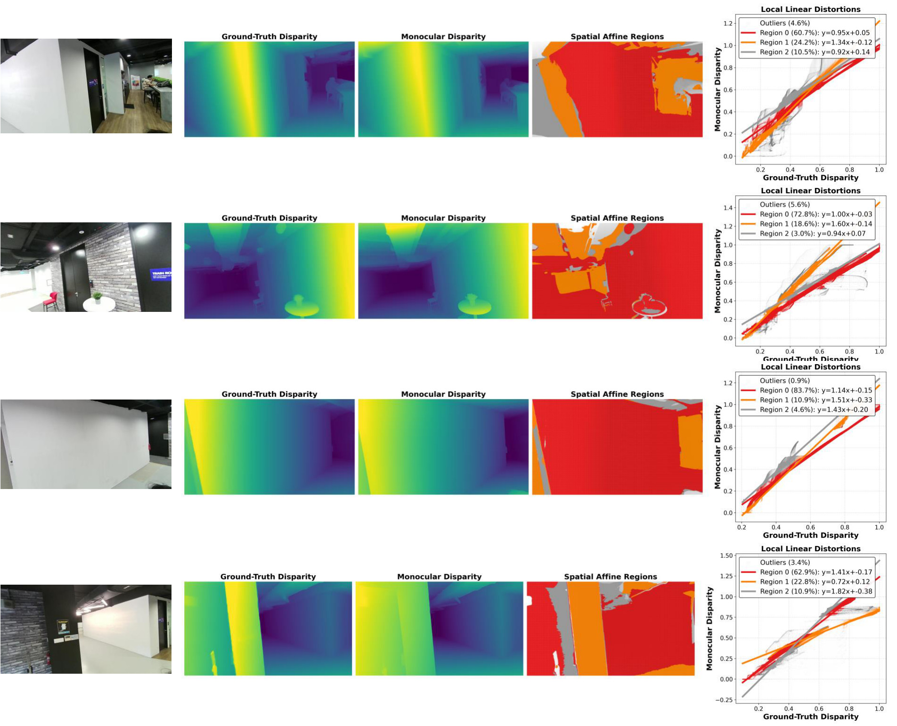
| Across diverse indoor scenes, the monocular disparity consistently fractures into spatially coherent affine regimes (red, orange and grey). The scatter plots show that one global scale-and-shift (K = 1) cannot fit these incompatible linear clusters: it either averages the error across all of them or fits the dominant region and warps the rest. Our method instead estimates spatially varying, edge-aware affine fields that rectify each region locally. |
| Instead of a single global scale-and-shift, we model the relationship between the monocular disparity d and the rendered 3DGS depth D as a spatially varying affine transform, 1/d(u,v) = α(u,v) D(u,v) + β(u,v). The fields are recovered without any sensor depth and re-estimated at every training iteration. |
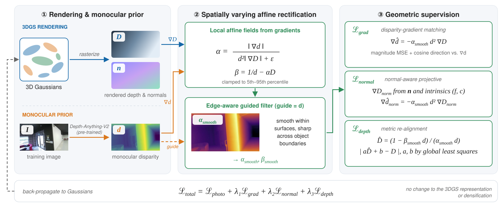
|
Sparse-view reconstruction (NeRF-LLFF)With only 2–5 training views, our rectified prior prevents structural collapse and outperforms all baselines at every view count. It closes the gap to, and in some scenes surpasses, the Oracle, which uses dense multi-view pseudo-ground-truth depth. |
| Method | PSNR ↑ | SSIM ↑ | LPIPS ↓ | |||||||||
|---|---|---|---|---|---|---|---|---|---|---|---|---|
| 2 | 3 | 4 | 5 | 2 | 3 | 4 | 5 | 2 | 3 | 4 | 5 | |
| 3DGS | 13.31 | 15.13 | 17.37 | 18.68 | .329 | .437 | .541 | .601 | .451 | .348 | .271 | .226 |
| DropGaussian | 13.00 | 16.53 | 17.83 | 18.62 | .386 | .557 | .622 | .665 | .444 | .266 | .229 | .205 |
| DepthSplat | 13.98 | 16.68 | 17.97 | 18.32 | .319 | .391 | .454 | .472 | .450 | .383 | .324 | .334 |
| DRGS | 17.31 | 18.75 | 20.06 | 20.78 | .475 | .539 | .601 | .631 | .324 | .287 | .249 | .225 |
| Ours | 18.79 | 20.95 | 22.37 | 23.32 | .533 | .663 | .721 | .761 | .235 | .164 | .134 | .111 |
| Oracle | 19.88 | 21.76 | 22.83 | 23.93 | .579 | .670 | .706 | .746 | .237 | .177 | .153 | .129 |
| Mean over the Fern, Flower, Fortress and Horns scenes and 10 random view selections; columns are the number of training views. Oracle (grey) is an upper bound that uses pseudo-ground-truth depth from all images. |
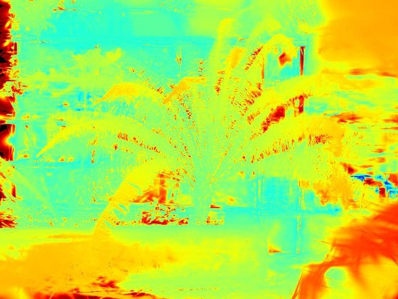
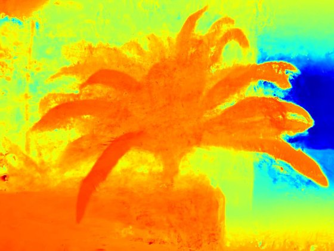
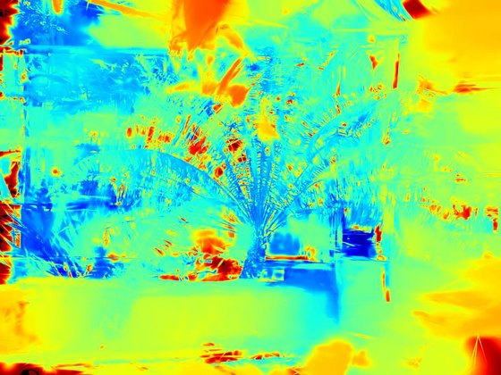
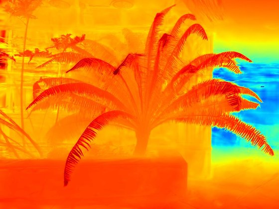
Novel-view synthesis & depth (MuSHRoom)Given the same Depth-Anything-V2 prior, globally aligned DN-Splatter (Monodepth) collapses structurally (Abs Rel 0.354). Our rectification cuts this to 0.055, compared with 0.023 for the sensor-supervised DN-Splatter, and matches DN-Splatter's photorealism. |
| Method | Sensor depth | PSNR ↑ | SSIM ↑ | LPIPS ↓ | Abs Rel ↓ | δ < 1.25 ↑ |
|---|---|---|---|---|---|---|
| Splatfacto | – | 24.44 / 21.33 | .8486 / .7821 | .1387 / .2240 | .0787 / .0817 | .9072 / .9061 |
| 2DGS | – | 22.52 / 21.73 | .8185 / .7898 | .1773 / .1911 | .0864 / .0923 | .8820 / .8927 |
| SuGaR | – | 20.52 / 18.18 | .7740 / .7125 | .2427 / .2959 | .1213 / .1174 | .8412 / .8564 |
| DN-Splatter (Monodepth) | – | 19.26 / 17.24 | .7255 / .6845 | .3338 / .3851 | .3542 / .3669 | .5682 / .5818 |
| Ours | – | 24.49 / 22.07 | .8570 / .7920 | .1288 / .1733 | .0551 / .0490 | .9674 / .9729 |
| DN-Splatter | ✓ | 24.58 / 21.89 | .8558 / .7984 | .1293 / .1797 | .0228 / .0354 | .9854 / .9683 |
| Explicit (Gaussian-based) methods, averaged over 6 scenes. Each cell shows the within-trajectory / disjoint-trajectory test split. Bold marks the best method without sensor depth. The sensor-supervised DN-Splatter (grey) is shown for reference. |
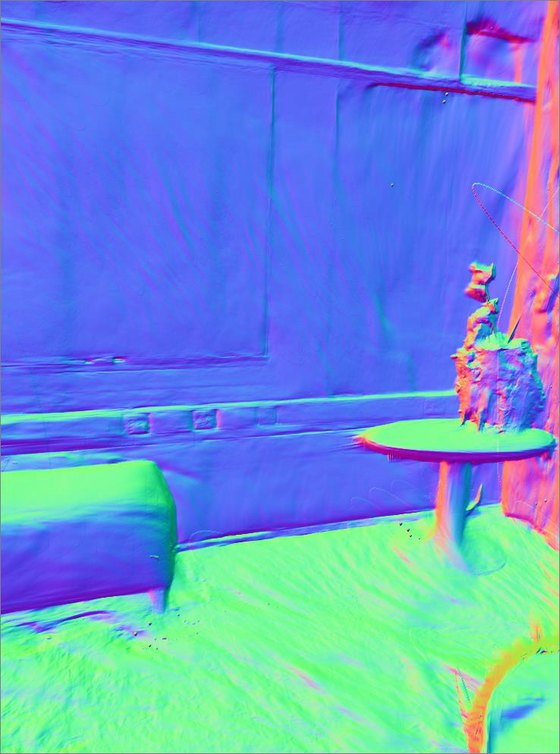
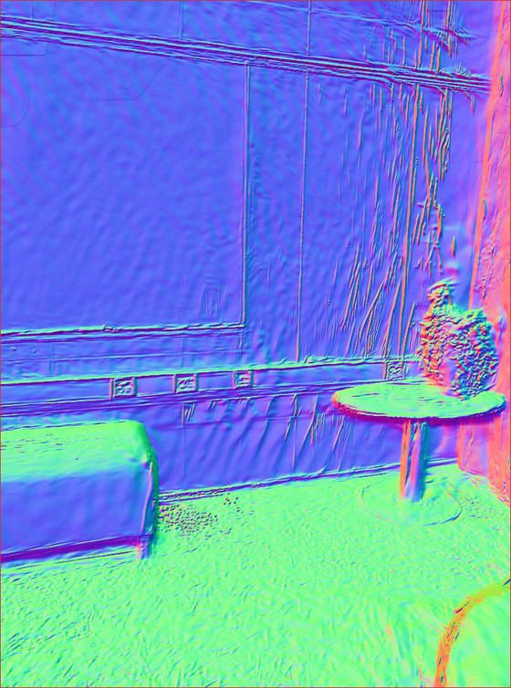
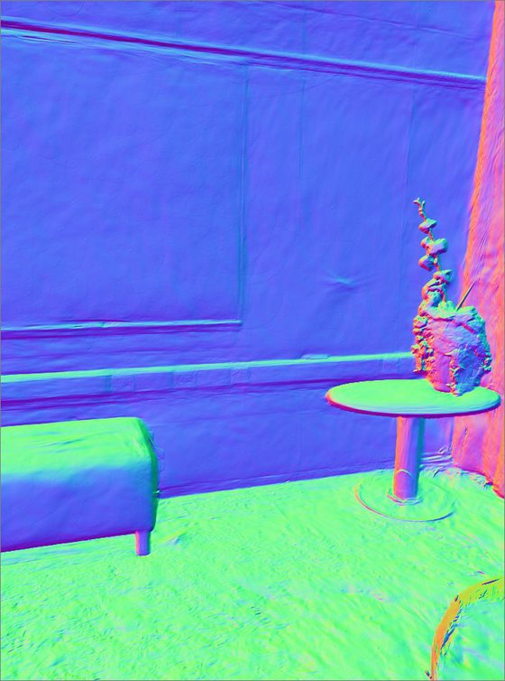
| The globally aligned baseline warps the geometry. By rectifying the same monocular prior, our method recovers crisp planar surfaces and sharp object boundaries, better than DN-Splatter even with sensor depth. |
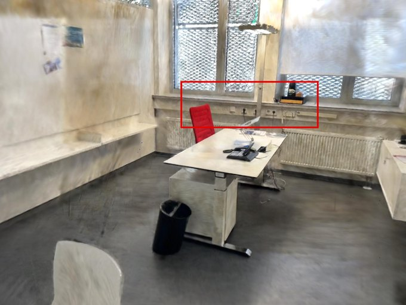
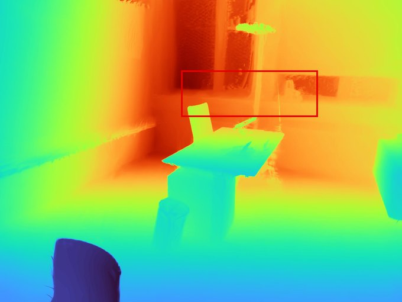
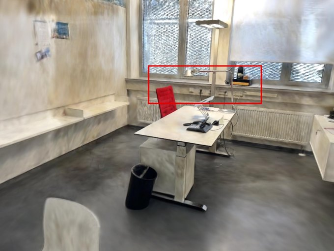
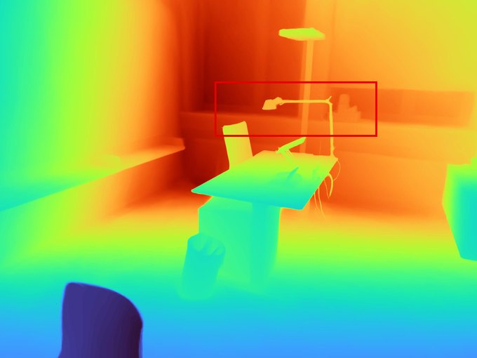
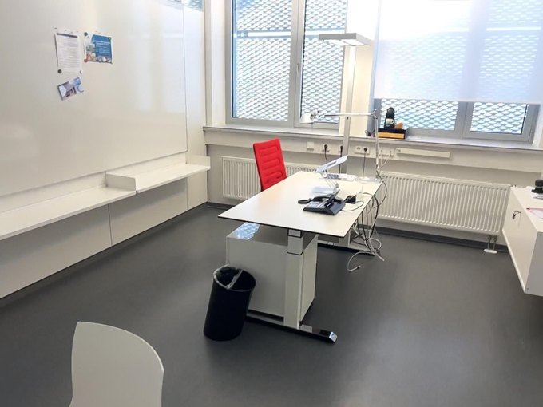
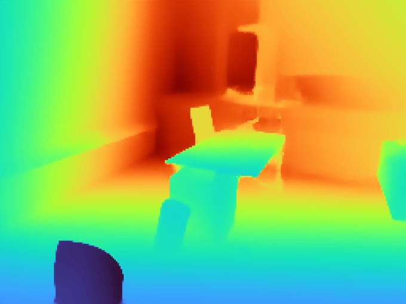
| Rendered RGB (top) and depth (bottom) on ScanNet++. The red boxes highlight sharper depth along furniture boundaries and complex geometry. |
Mesh reconstruction (MuSHRoom & ScanNet++)Without sensor depth, DN-Splatter's meshes degrade badly (F-score 0.28 on MuSHRoom). With the same monocular prior, our method reaches 0.71 and is the best sensor-free explicit method on both datasets, ahead of dedicated meshing methods such as SuGaR and 2DGS. |
| Method | Sensor depth | MuSHRoom | ScanNet++ | ||||
|---|---|---|---|---|---|---|---|
| Chamfer-L1 ↓ | Normal C. ↑ | F-score ↑ | Chamfer-L1 ↓ | Normal C. ↑ | F-score ↑ | ||
| Splatfacto | – | .0652 | .7727 | .5835 | .1719 | .6741 | .1790 |
| 2DGS | – | .0687 | .8008 | .6039 | .1035 | .7799 | .4196 |
| SuGaR | – | .0620 | .8031 | .6378 | .0975 | .7241 | .4367 |
| DN-Splatter (Monodepth) | – | .2605 | .6415 | .2765 | .1975 | .7378 | .1395 |
| Ours | – | .0486 | .8662 | .7097 | .0707 | .8747 | .4765 |
| DN-Splatter | ✓ | .0216 | .8822 | .9243 | .0667 | .8316 | .7658 |
| Explicit methods; F-score at a 5 cm threshold. Bold marks the best method without sensor depth. The sensor-supervised DN-Splatter (grey) is shown as an upper bound. |
| Drag the slider to compare extracted meshes on ScanNet++. |
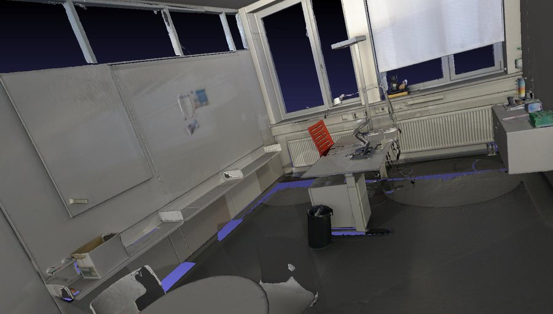
AblationEach loss contributes to the result. Ldepth anchors the global scale, Lnormal keeps surfaces smooth, and Lgrad ties disparity gradients to physical structure. Together, they trade a small PSNR drop for the best geometric accuracy. |
| Method | Photometry | Geometry | |||
|---|---|---|---|---|---|
| PSNR ↑ | LPIPS ↓ | Abs Rel ↓ | Accuracy ↓ | F-score ↑ | |
| Splatfacto (baseline) | 25.293 | 0.086 | 0.059 | 0.043 | 0.728 |
| + Lgrad | 24.322 | 0.123 | 0.085 | 0.054 | 0.673 |
| + Lnormal | 25.256 | 0.085 | 0.064 | 0.042 | 0.728 |
| + Ldepth | 24.561 | 0.098 | 0.043 | 0.030 | 0.798 |
| + Lgrad + Lnormal | 24.553 | 0.116 | 0.075 | 0.051 | 0.707 |
| + Lgrad + Ldepth | 25.012 | 0.101 | 0.041 | 0.026 | 0.850 |
| + Lnormal + Ldepth | 25.418 | 0.084 | 0.040 | 0.028 | 0.813 |
| All (Ours) | 24.947 | 0.102 | 0.040 | 0.025 | 0.855 |
| Evaluated on the coffee_room scene of MuSHRoom. Bold marks the best geometric results. |
| Tze Ho Elden Tse, Jizong Peng, Richard Chen, Angela Yao. Unlocking Accurate Geometry in 3DGS via Spatially Varying Affine Rectification NeurIPS, 2026 (hosted on ArXiv) |
Acknowledgements |